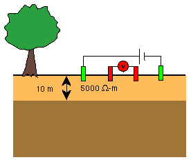
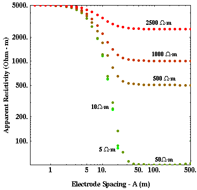

Apparent Resistivity Curves for Soundings Over One-Layered Media

We have already seen examples of apparent resistivity curves generated
over earth structures consisting of a single layer over a halfspace.
Let's now explore the apparent resistivity curves generated over these types of media in a more
systematic fashion.
The results shown in all of the next pages were generated using a Wenner array.
The use of a Schlumberger array would not significantly alter any of the conclusions
drawn.
Consider measuring apparent resistivity over the structure shown to the right. A 10-meter thick, 5000 ohm-m layer overlies a halfspace that has a resistivity that is always less than 5000 ohm-m. Shown below are apparent resistivity curves computed assuming various values of resistivity for the halfspace (2500, 1000, 500, 50, 10, 5 ohm-m). Note that on this plot, the lower apparent resistivity boundary has been set to 50 ohm-m. The apparent resistivity curves computed with a 10 and a 5 ohm-m halfspace extend below the bottom of the plot.

In this particular case, the apparent resistivity curves behave exactly as we would expect them to, given what we have seen in our previous examples. All of the curves asymptotically approach the resistivity of the layer, 5000 ohm-m, at small electrode spacings. As electrode spacing increases, the apparent resistivity curves asymptotically approach the true resistivity of the halfspace (this is true even for the 10 and 5 ohm-m curves, we just haven't plotted resistivities this small on the graph). In addition, note that the resistivity curves all tend to show the greatest change in apparent resistivity with electrode spacing (i.e. the greatest slope) when electrode spacings are approximately equal to the depth of the layer, 10 meters.
Resistivity
- Current Flow and Ohm's Law pg 4
- The Fund. Electrical Property is Resistivity, NOT Resistance pg 5
- Resistivities for Common Earth Materialspg 6
- Current Density and Electric Fieldpg 7
- A First Estimate of Resistivitypg 8
- Current Flow From Two Closely Spaced Electrodespg 9
- A Practical Way of Measuring Resistivity pg 10
- Sources of Noise pg 11
- Depth of Current Penetration V.S. Current ElectrodeSpacing pg 12
- Current Flow in Layered Media pg 13
- Variation in Apparent Resistivity: Layered Versus Homogeneous Media pg 14
- Current Flow in Layered Media Versus Electrode Spacing pg 15
- A Second Example of Current Flow in Layered Mediapg 16